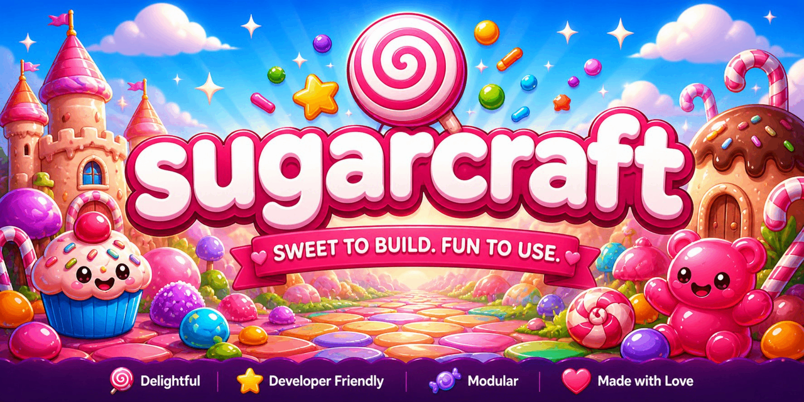
Terminal UIs that taste like candy.
SugarCraft is a PHP-native TUI ecosystem — forty libraries and twenty-one apps (sixty-one packages total). MVC-style Model–Update–View runtime, declarative styling, animation, charts, forms, SSH-served apps, telemetry, file managers, an AI chat shell. Composer-installable, PHP 8.3+, fibers, async on ReactPHP.
Every layer of the terminal stack — in PHP.
Click an icon to jump to its detail page. Every package is published independently, ships its own examples and PHPUnit suite, and shares a single styling vocabulary so they compose without glue code.
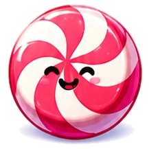
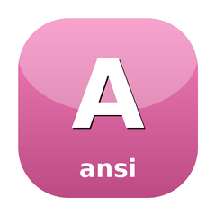
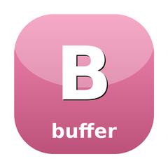
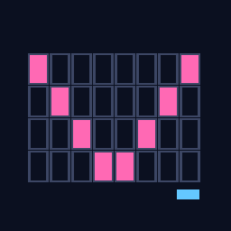
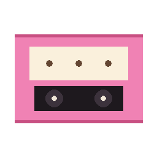
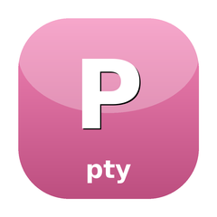
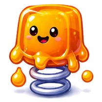
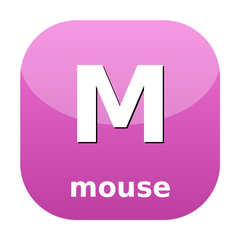
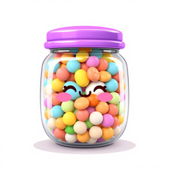
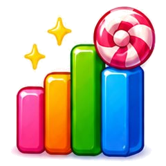
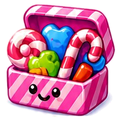
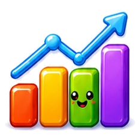
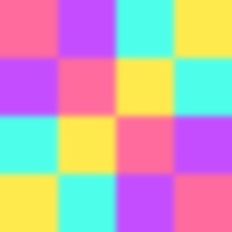
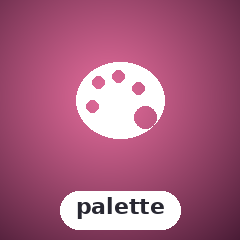
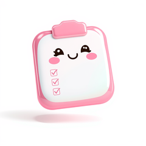
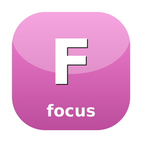
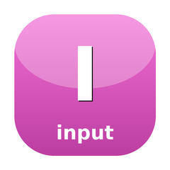
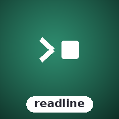
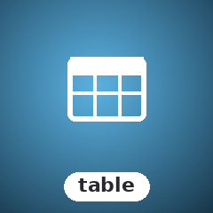
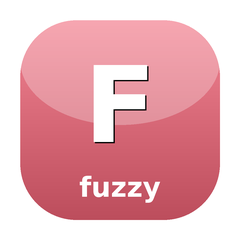
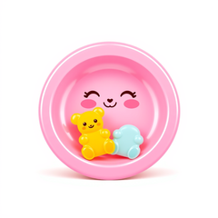
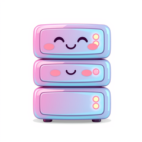
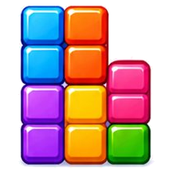
Built for the things Symfony Console can't do.
Persistent render loops, mouse + keyboard, alt-screen, async work without blocking the UI, multi-tenant SSH-served TUIs, charts and sparklines, animated spinners, multi-page forms, Markdown rendered straight to ANSI. The boring parts of CLI tooling — argv parsing, exit codes — pair perfectly with whatever Console framework you already use.
Forty libraries, one ecosystem.
Each library has its own composer package, README, examples, and PHPUnit suite. Pull just the ones you need — or grab the umbrella metapackage and get the lot.

MVC-style Model–Update–View runtime — Model / Msg / Cmd / Program. Cell-diff renderer saves SSH bandwidth.

Declarative styling + layout. Style, Border, Table, List, Tree, Layout::join/Place, multi-layer Canvas.

Cell-grid value objects — immutable Buffer (2-D cell grid) and Cell (rune/style/link/width). Shared foundation for all rendering, with minimal-repaint diffs via Buffer::diff().
Shared async vocabulary — CancellationToken, Subscriptions, AsyncOps helpers (withTimeout, retry, debounce, throttle). Foundation for ReactPHP usage across the ecosystem.

Damped spring physics + Newtonian projectile sim. The animation engine behind every smooth scroll in the stack.

Mouse-zone tracker. Wrap rendered chunks, get back bounding boxes — clickable regions without coordinate math.

Seventeen components: TextInput, TextArea (dynamic-height), ItemList, Table (per-cell styleFunc), Tree, Viewport, FilePicker, Progress, Spinner, Cursor, Help, Key, Paginator, Scrollbar, Tabs, Stopwatch, Timer.

Sparkline, Bar, Line, Heatmap, Scatter, TimeSeries, Streamline, Waveline, OHLC, plus Sixel / Kitty / iTerm2 image rendering.

SugarForms
GitHub →Form library (port of charmbracelet/huh) and foundation for the form primitives SugarWidgets re-exports — Note, Input, Confirm, Select, MultiSelect, Text, FilePicker, multi-page Groups, six themes. Form-level KeyMap override per binding.

Markdown → ANSI renderer. Word-wrap, OSC 8 hyperlinks, syntax highlighting, eight themes, custom themes via JSON.

CLI presentation helpers — StatusLine, Banner, Section, Stage, HelpText. Library-only, no Symfony Console requirement.

SSH server middleware framework — Logger, Auth, RateLimit, and a terminal middleware that runs a full SugarCraft app in each session. OpenSSH ForceCommand handles the wire protocol.

Telemetry primitives. Counter / Gauge / Histogram, four backends (InMemory, JSON, StatsD, Prometheus textfile), CandyWish session middleware.

Colorful leveled logger. Debug / Info / Warn / Error / Fatal with structured context, Text / JSON / Logfmt formatters, and sub-loggers.

Image-to-cell renderer — Sixel, Kitty, iTerm2, Unicode half-block; Picker facade; ext-gd.
Self-contained Mark/Scan/Get mouse hit-testing + ZoneClickTracker for press/release deduplication. No external Manager wiring needed.

Terminal color profile detection + ANSI / ANSI256 / TrueColor conversion. StandardColors and ProfileWriter.
ANSI escape-sequence parser + state machine (SGR, cursor, erase, DEC modes). Feeds into CandyVt for cell-grid rendering.

In-memory virtual terminal emulator. ANSI byte stream → cell grid + cursor + mode state.

Record + replay candy-core sessions — JSONL/YAML cassettes, Recorder hook, Player + Byte/Screen assertions, CLI.

PTY primitive for Linux + macOS — open / spawn / read / write / resize / size / setBlocking, Child lifecycle, SignalForwarder (SIGWINCH → resize).
Focus-ring state machine — ordered focusable regions with a single focused member + wrap-around Tab/Shift-Tab traversal. Dependency-free.
Poster grids & rails for media TUIs — a 2-D virtualized, sparse PosterGrid with owner-driven range paging, a Rail carousel, and a renderer-agnostic PosterCard tile.

Tree/list view with box-drawing prefixes, cursor navigation, word-wrap, and filter-as-you-type.

Constraint-based layout solver — Cassowary simplex + greedy 5-phase fallback. LayoutSolver interface; swap solvers without touching call-sites.

Box-drawing layout engine. H/V panel composition with weighted sizing, borders, and nested grids.

Terminal overlay compositor. Push/pop overlay views with z-ordering, positioning, and per-overlay teardown.

Navigation breadcrumbs. Immutable NavStack with push/pop, shell-change detection, and type-ahead filter.

Dashboard TUI library — column grid layout, framed panels, status bar, tabs, and more.

Fuzzy finder overlay. Type to filter a list, arrow keys to select, Enter to confirm. Renders over your app's view string while the background keeps updating.
Terminal escape sequence decoder — legacy keys, Kitty keyboard, SGR 1006 mouse, focus, bracketed paste. The missing input layer for PHP TUI.
SugarFuzzy
GitHub →Fuzzy string matching with scored matched indices — Smith-Waterman + Sahilm algorithms. Extracted from sugar-forms; unblocks filter-highlighting UI.

FlexBox layout engine + simple sort/filter table. Ratio-based sizing, gap, justify, align, per-column styling.

Floating notification overlays. Info / Success / Warning / Error types, configurable position and auto-dismiss.

Interactive month-grid date picker. Keyboard navigation, min/max date constraints, locale day names, ANSI rendering.

Interactive prompts — Text, Confirm, Selection, MultiSelect, Textarea. State-machine model, no external readline dependency.

Full-featured interactive data table — column definitions, StyledCell ANSI formatting, pagination, frozen rows and columns.
SugarDiff
GitHub →Unified-diff engine — LCS line diff, context hunks, GNU diff -u writer and line-number scanner.
MCP client core — JSON-RPC 2.0 codec, stdio transport with bounded child lifecycle, initialize/tools handshake, tool narrowing.

Test harness for SugarCraft apps — ProgramSimulator, golden-file assertions, snapshot helpers. Deterministic Model–Update–View testing down to the byte.
Twenty-one apps built on the stack.
Standalone executables — CLI tools (prompts, markdown, screenshots), full TUIs (file manager, git, SQLite, AI chat, games), and a project starter. Install via Composer, run as a CLI binary. Each has a detail page below with controls, architecture, and demo recordings.

composer create-project sugarcraft/candy-starter my-app — pour your model into the mold and you've got a working app.

Composer-installable CLI of thirteen subcommands — choose, confirm, file, filter, format, input, join, log, pager, spin, style, table, write.

Code → SVG screenshot. Traffic-light window controls, drop shadow, gutter line numbers, ANSI SGR parsing. No GD / Imagick.

Markdown CLI viewer. Renders to stdout or opens a fullscreen pager. Eight themes, custom JSON themes, OSC 8 toggle.

ANSI escape-sequence inspector. Labels SGR / CSI / OSC / DCS / APC / SS3 — feed it stdin, get a human-readable annotation back.

SSH endpoint launcher. YAML / JSON directory of `ssh user@host` shortcuts, interactive picker, pcntl_exec into the chosen ssh.

Personal key/value store CLI — one SQLite database per store file. Glob listing, TTL, JSON/YAML import/export.

Email sending library. SMTP + Resend API transports, attachments, HTML + plain-text multipart, fluent interface.

Self-hostable Git server over SSH (authorized keys), Git daemon, and HTTP. Users, repos, access control, optional LFS.

Tetris clone — SRS rules, 7-bag RNG, ghost piece, NES scoring, level-driven gravity. 41 tests / 1535 assertions.

Dual-pane file manager. Tab-swap focus, multi-select, sort cycling, hidden-file toggle, delete-with-confirm.

TUI AI coding agent. 7 providers (OpenAI, Anthropic, Claude Code, SGLang, Bedrock, Vertex, custom), built-in tools, skills, hooks, sub-agents, MCP, and SQLite session history.
Browser UI for SugarCrush's server mode — a Vite + Vue 3 bundle committed as dist/ and located by a one-class PHP shim, so sugarcrush serve needs no Node. Scaffold today.

Three-pane git TUI — status / branches / log, single-key stage / unstage. Shells out to git for every mutation so your hooks + signing config keep working.

Terminal SQL client TUI — list tables, peek at row data, run ad-hoc queries, explore query plans, and monitor server health. Multi-driver: SQLite, MySQL, and PostgreSQL.

Privacy-first coding-time tracker — JSONL on disk, SugarCharts-driven dashboard. No cloud, no MongoDB, bring-your-own-storage stays local.

Minesweeper — customisable board, recursive flood-fill, win/lose detection. Pure-state Board; first-click safety; deterministic-RNG injectable for tests.

ANSI/GIF animation toolkit — ext-gd decode, cell-grid downsample, solid / luminance-ramp presets, .ansi art playback. Viewer CLI: candy-gifview.

CandyGifView
GitHub →Terminal GIF + .ansi-art viewer CLI — sizes to the viewport, plays in the alternate screen (24-bit blocks or luminance ramp) on top of candy-flip. Port of gifterm.

Terminal video player — decodes mp4 (and more) on the fly and renders to ASCII / ANSI / truecolor half-block / sixel / kitty.

Terminal system monitor — cpu, mem + disks, net and process boxes with braille graphs, gradient meters, menus, presets, 43 themes and btop-compatible config, over Linux /proc + /sys and FreeBSD collectors.

Flappy-Bird in your terminal — bird motion is a HoneyBounce projectile, pipes scroll left at a fixed cell rate, collision is per-cell. PRNG-injectable for deterministic tests.
Five layers, no surprises.
SugarCraft is a layered architecture with one responsibility per layer. Dependencies flow one way through the stack, so you can grab as much or as little as you need.
CLI apps: CandyScriptui (one-shot CLI helpers), CandyMdview (markdown), CandyAnsiInspect (ANSI inspector), CandyCodeshot (code → SVG), CandySshLauncher (SSH launcher), CandyGitServer (git server), CandyKv (key/value store), CandyMail (email sender).
TUI apps: CandyStarter, CandyTetris, CandyFiles, SugarCrush, CandyGit, CandySql, CandyCodetime, CandyMinesweeper, CandyFlip, CandyTop, CandyFlappy.
Web UI: SugarCrushWeb (browser face of SugarCrush).
Async-first
ReactPHP event loop under the hood. Cmds run as fibers; the render thread never blocks on I/O.
Immutable values
Every Model, Style, Border, Theme is a readonly DTO. with*() returns a new instance — no hidden mutations.
Testable by design
Pure update functions and snapshot ANSI tests. No tmp dirs, no mocks for the renderer — just assert against the frame.
One styling vocabulary
Every package speaks Sprinkles\Style. Mix CandyShine output into a SugarWidgets Viewport, wrap that with a CandySprinkles Border — they all compose.
SSH the easy way
CandyWish leans on ForceCommand. sshd handles auth, ciphers, fail2ban, audit logs — you get a clean middleware programming model.
No native extensions
Pure-PHP base flow. ext-pcntl, ext-gd, ext-ssh2 are optional for niche features.
See them run.
VHS-recorded GIFs of every interactive demo, regenerated on every push that touches the corresponding source. Two-hundred-eighty-one demos in total — these are the headliners; click into any library page for its full set.
SugarCraft
↑ ↓ counter through the runtime
CandySprinkles
Styled dashboard with borders + colours
SugarWidgets
Spinner gallery — all 12 styles
SugarCharts
Heatmap rendered to ANSI
SugarForms
Multi-page form wizard
CandyScriptui
One-shot style subcommand
CandyShine
Markdown → ANSI render
CandyKit
StatusLine + Banner + Stage CLI page
CandyCodeshot
Code → SVG screenshot generator
CandyMdview
README rendered through 4 themes
CandyAnsiInspect
Labelling SGR / OSC / DCS / APC
CandySshLauncher
SSH endpoint picker with type-filter
HoneyBounce
Damped spring oscillator
CandyStarter
Bootstrap skeleton — counter app
CandyTetris
Tetris with ghost piece + hard drop
CandyFiles
Dual-pane file manager
SugarCrush
AI chat shell with EchoBackend
CandyGit
Three-pane git TUI
CandySql
SQLite browser TUI
CandyCodetime
Coding-time dashboard
CandyMinesweeper
Minesweeper, flood-fill + flag
CandyFlip
ANSI/GIF animation toolkit
CandyGifView
GIF + .ansi-art viewer CLI
CandyFlappy
Flappy-Bird with HoneyBounce physics
SugarTable
Frozen column + paginated host telemetry
SugarToast
Info / Success / Warning / Error toast types
SugarFlexbox
Ratio-based FlexBox row + column
SugarDatepicker
Interactive month-grid date picker
SugarOverlay
Modal + centered overlays composited over a frame
CandyPalette
Terminal color-profile detection
SugarMouse
Mouse-zone tracking on rendered buttonsFrom composer require to a working counter in ten lines.
Install the umbrella, drop the snippet below into a file,
php counter.php. ↑ ↓ to count, q to quit.
1. Install
composer require sugarcraft/sugarcraft2. Write the model
use SugarCraft\Core\{Cmd, KeyType, Model, Msg, Program};
use SugarCraft\Core\Msg\KeyMsg;
final class Counter implements Model {
public function __construct(public readonly int $n = 0) {}
public function init(): ?\Closure { return null; }
public function update(Msg $msg): array {
if ($msg instanceof KeyMsg && $msg->rune === 'q') return [$this, Cmd::quit()];
return [match (true) {
$msg instanceof KeyMsg && $msg->type === KeyType::Up => new self($this->n + 1),
$msg instanceof KeyMsg && $msg->type === KeyType::Down => new self($this->n - 1),
default => $this,
}, null];
}
public function view(): string { return "n = {$this->n}\n↑ ↓ to count, q to quit\n"; }
}
(new Program(new Counter()))->run();
3. Run it
php counter.phpWant a project skeleton instead?
composer create-project sugarcraft/candy-starter my-app
scaffolds a runnable counter app with PHPUnit wired up — see
CandyStarter.
Why pick SugarCraft?
Three flavours of "build a TUI in PHP" — pick the row that matches your project's needs. (Full reasoning on the comparison page.)
| Capability | SugarCraft | Symfony Console | readline / raw |
|---|---|---|---|
| MVC-style Model–Update–View runtime (Model / Msg / Cmd) | ✓ | — | — |
| Async event loop (fibers + ReactPHP) | ✓ | partial | — |
| Declarative styling (CSS-like flexbox / borders) | ✓ | manual | — |
| Composable form library | ✓ (SugarForms) | — | — |
| Mouse + key bindings | ✓ | — | — |
| SSH-served apps (multi-tenant) | ✓ (CandyWish) | — | — |
| Charts / sparklines / heatmaps | ✓ (SugarCharts) | — | — |
| One-shot CLI prompts | ✓ (CandyScriptui) | primitive | — |
| Markdown → ANSI rendering | ✓ (CandyShine) | — | — |
| Code → SVG screenshots | ✓ (CandyCodeshot) | — | — |
| Telemetry primitives (StatsD / Prom) | ✓ (CandyMetrics) | — | — |